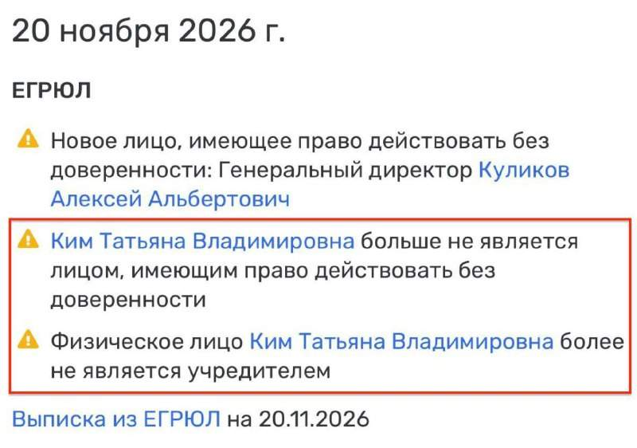

Зумер заставил Claude всю ночь играть в GTA 6 и заработал на этом $10 тысяч. 18-летний парень пригрозил нейросети отменой подписки за $200, если та умрёт в игре. В итоге ИИ 12 часов сам нарезал короткие ролики и выкладывал их в соцсети. @bankrollo
Зумер заставил Claude всю ночь играть в GTA 6 и заработал на этом $10 тысяч. 18-летний парень пригрозил нейросети отменой подписки за $200, если та умрёт в игре. В итоге ИИ 12 часов сам нарезал короткие ролики и выкладывал их в соцсети. @bankrollo
Окружение Трампа во всём с ним соглашается, рассказала Мелания Трамп. По её словам, она старается говорить президенту правду, даже если её мнение отличается от его позиции. «Я чувствую, что иногда вокруг него слишком много людей, которые просто соглашаются со всем, и это нездорово». @bankrollo
Московский Дед Мороз хочет пересесть на беспилотник — РИА Новости. В предстоящую новогоднюю ночь он будет управлять санями сам, но в будущем они могут стать беспилотными, отметил он. @bankrollo
Школьник выбрал «67» вместо подписи в первом паспорте и теперь будет ходить с ней 6 лет. @bankrollo https://t.me/bankrollo/69112 В МВД разрешили россиянам ставить подпись «67» в паспорте. Такая подпись не является основанием для признания документа недействительным, отметили в ведомстве. @bankrollo

Татьяна Ким больше не гендиректор Wildberries. Эту должность занял топ-менеджер платформы Алексей Куликов. В понедельник Ким попала в санкционные списки ЕС. @bankrollo
Дроны атаковали судно в Финском заливе, сообщил губернатор Ленобласти Дрозденко. Грузовой корабль, шедший в Калининград, был атакован в нейтральных водах. @bankrollo
Дания предложила ЕС прекратить выдачу туристических виз россиянам и не признавать небиометрические паспорта, пишет Reuters. Ранее стало известно, что Дания собирается временно ограничить выдачу виз российским гражданам. @bankrollo
Максимум 90 минут в день можно играть в GTA 6, чтобы не сойти с ума, рассказала клинический психолог Уманова. По её словам, игровой марафон — это многочасовая статическая нагрузка с перевозбуждением нервной системы. 50 часов сюжета, «утрамбованные» в свободные двое суток, можно считать не отпуском, а сменой на износ, отметила она. @bankrollo
Огромного монстра выловили в Москве-реке. Им оказался гигантский сом весом 27 кг. Рыбу взвесили, сделали фото и отпустили. @bankrollo
Окружение Трампа во всём с ним соглашается, рассказала Мелания Трамп. По её словам, она старается говорить президенту правду, даже если её мнение отличается от его позиции. «Я чувствую, что иногда вокруг него слишком много людей, которые просто соглашаются… https://t.me/bankrollo/70441 Трамп заявил, что одарён на генетическом уровне. «Один мой родственник всю жизнь посвятил Массачусетскому политеху и стал величайшим профессором в истории вуза. Поэтому я одарён на генетическом уровне!». Всё это время госсекретарь Рубио едва сдерживал смех, а в конце просто не выдержал. @bankrollo
По всему Калининграду звучат сирены воздушной тревоги, жителей призвали укрыться в безопасных местах — Mash. @bankrollo
Скины в CS2 стремительно дешевеют. Капитализация рухнула уже до $5 млрд, а с исторического максимума в октябре 2025 года рынок обвалился на 43%. Падение длится уже год и связано с обновлением, когда Valve разрешила крафтить ножи и другие редкие предметы из красных скинов. @bankrollo